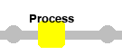
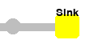
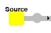
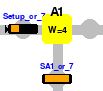
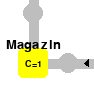
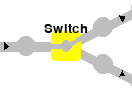
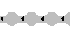
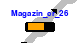
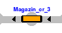

Core Concepts
A production line in LineFlow consists of a number of line objects that are put together to form the line.
Line Objects
These are the building blocks to set up assembly lines.
| Name | Visualization | Type | Description |
|---|---|---|---|
Process |
 | stationary | A station that simulates a processing step on the Part. The processing step can be set to repeat due to a simulated human error, which doubles the processing time. |
Sink |
 | stationary | Removes components from a Carrier. Carriers arrived here are marked as OK. Empty carriers are either removed or returned to a Magazine or Source using a separate out-buffer depending on the layout. This way, the station can be used in both linear and circular lines. |
Source |
 | stationary | Places parts onto carriers. Can set individual properties, called part spec, to every part set up, like the assembly condition. Carriers are either created, taken from a Magazine, or fetched from a separate incoming buffer. |
Assembly |
 | stationary | A Station for simulating assembly activities on the line.Individual parts and components are delivered with individual carriers, assembled with a simulated processing time, and forwarded to the downstream station. Can be connected to a WorkerPool that can assign worker objects to it, modifying its processing time. |
WorkerPool |
stationary | Holds a predefined set of Worker objectsand is attached to a fixed number of stations. Multiple pools can coexist for an assembly line,allowing modeling of different skills or experience of workers. |
|
Magazine |
 | stationary | Magazine station is used to manage the carriers.The total number of carriers available to the line can be controlled via this station. The capacity of the carriers, i.e., the possible number of components that can be added at the assembly station, is also determined by this station.If the number of carriers is not of interest, the source can place the parts directly on carriers, and no magazine is required. |
Switch |
 | stationary | The Switch distributes carriers to different stations,enabling parallel structures within the line. |
Buffer |
 | stationary | The Buffer transports carriers from one station to another. Time needed to push and get carriers to and from can be specified as well as its capacity and the time a Carrier needs to traverse the buffer. |
Carrier |
 | movable | Is set up at a Source station or a Magazineand holds a predefined number of Part objects. |
Part |
 | movable | Single unit which is initially created at a Source.Holds a part spec each station handling it can accessand individually adapt to. |
Worker |
movable | Belongs to a WorkerPool and can be assigned to a station. Traversal time can be configured. |
States
In LineFlow, the LineStates
represent the current state of an assembly line and thus is the key interface
to extract information from it, like when optimizing reinforcement learning
agents. On the one
hand, different line objects can constantly
update their state (like setting a status or tracking a part) which in
turn
can be observed. On the other hand, the policy can apply changes to a
certain state to actively change the behavior of an object.
Types
As different states need different encodings as observations and different probabilistic modelings as actions, we have to distinguish different types of states. Currently, the following types of are provided:
DiscreteState: State that handles discrete objects that do not have a natural order, like categories, where the available choices are clear from the beginning (i.e, the possible modes of a station)NumericState: State that handles numeric valuesCountState: State to count objects or occurences, like carriers, produced parts, scrap, workersTokenState: State to handle discrete objects where its not clear from the start which and how many objects need to be tracked (i.e, the ID of a carrier visiting the station).
Mechanics
Typically, the user must not initialize states by herself as this is done in the respective
LineStates, like stations
or buffers. The following explanations serve developers that intend to
implement own line objects.
Properties
For each state, it must be decided whether it can be observed, i.e. is visible to a policy, and is actionable, i.e. can be changed by a policy. These properties need to be set when initializing the state and cannot be changed afterwards.
For instance, the mode of a station can be observed, but the policy can not actively change the state as this depends on exterior effects:
from lineflow.simulation.states import DiscreteState
mode = DiscreteState(
name='mode',
categories=['waiting', 'working', 'error'],
is_actionable=False,
is_observable=True,
)
power = DiscreteState(
name='power',
categories=['on', 'off'],
is_actionable=True,
is_observable=True,
)
Counts, on the other hand, may be initialized as follows:
from lineflow.simulation.states import CountState
count = CountState(
name='n_scraps',
is_actionable=False,
is_observable=True,
)
Change values
Generally, there are two situations where a value of a state needs to be
updated during a simulation: Either external properties change and the
state needs to be synchronized by a
LineState or a policy
actively wants to change a value. Both ways are explained in the
following.
Updating from a line object:
When a line object needs to update a status, the update method has to
be called:
Updating from an agent
When a policy wants to change a state, the
apply method needs to be called.
In case of discrete events, the input now is not the string
representation but the encoded one. For instance:
Access values
Values of a state can be accessed using the attribute
value:
States of line objects
Multiple states can be gathered in a
ObjectStates. These reflect all
states of a LineStates
states = ObjectStates(
DiscreteState('mode', categories=['waiting', 'working', 'error']),
DiscreteState('on', categories=[True, False]),
CountState('n_scraps', is_actionable=False, is_observable=True),
)
Alternatively, all states can be updated with a single call of update:
The values can be accessed all together via the
value attribute:
States of lines
A Line object consists of
multiple ObjectStates
elements of all objects attached to it. Once a single state of an object is
updated, this is directly visible in the state of the line.
Parts and Carriers
In LineFlow, every part is transported by a carrier as it
moves through the production line. Hence, carriers act as mobile containers: once a
Source (or a
Magazine) creates a new carrier, it puts a predefined
sequence of initial parts onto the newly created carrier.
At each station the carrier visits, new parts can be added or existing parts removed, typically at
Assembly stations.
Parts can show different behaviors at different stations. For instance, a certain part may require
an additional processing time at a given process or has to statisfy a certain condition before it
can be assembled. These specification are fixed when creating the part at the source and can be
given in a carrier_spec. For instance, the following parameter can be given when creating a source
station:
carrier_spec = {
"CarrierA": {
"Part1": {
"P1": {"extra_processing_time": 5},
"A1": {"assembly_condition": 10},
}
"Part2": {
"P1": {"extra_processing_time": 1},
"P2": {"extra_processing_time": 3},
"A1": {"assembly_condition": 8},
}
},
"CarrierB": {
"Part1": {
"A1": {"assembly_condition": 10},
}
"Part2": {
"P2": {"extra_processing_time": 3},
}
"Part3": {
"P1": {"extra_processing_time": 1},
"P2": {"extra_processing_time": 3},
"A1": {"assembly_condition": 8},
}
}
}
Here, the source creates (randomly) either a carrier of type CarrierA or of CarrierB. CarrierA
has two parts, Part1 and Part2, each with their own specifications. For instance, Part1
consues an additional processing time of 5 time stepts at station P1 and needs to be assembled at
station A1 within 10 time steps from its creation. Similarly, Part2 has a processing time of 1
at P1, 3 at P2, and an assembly condition of 8 at A1.